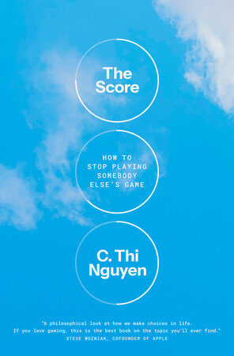
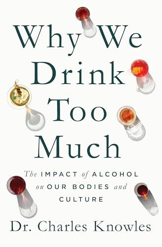
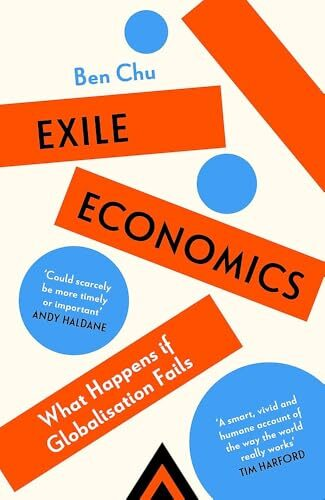
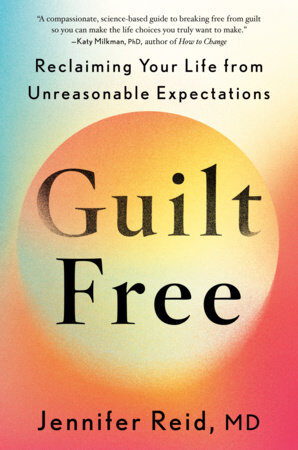
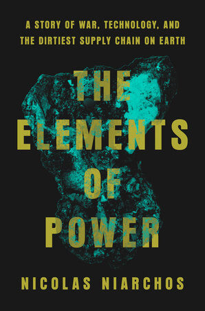
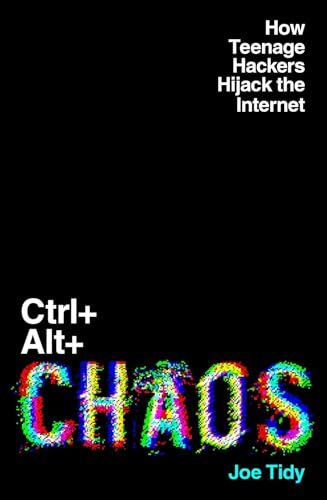

The most interesting nonfiction books coming out this month
📅 January 2026New year, new you — at least that's the promise. This month's picks range from the philosophy of why we chase scores to the science of why we drink, from the geopolitics of rare earths to teenage hackers hijacking the internet. Six books about power, self-renewal, guilt, games, drinking, and world domination.
▶ Watch the full video breakdown on YouTube

Philosopher C. Thi Nguyen — one of the leading experts on the philosophy of games and data — takes us on a deep dive into how scoring systems shape our desires. As we gamify everything from work to education, we twist incentives and lose sight of what actually matters. Metrics don't capture what's important — they only capture what's easy to measure. This book asks whether the game we're playing is really the one we want to be playing.

Alcohol — we drink it, we celebrate with it, but we barely question it. Dr. Charles Knowles pairs scientific expertise with personal experience to offer an accessible window into what really happens in our brains and bodies when we drink, and why we do it. People vary greatly in the rewards they get from alcohol, both physically and mentally — shaped by genes and environment. From the sober-curious to those who need help, this book teaches the science behind drinking and invites us to examine our relationship with alcohol.

Nations are turning away from each other. Faith in globalization has been fatally undermined since the pandemic, the energy crisis, surging trade frictions, and swelling great power rivalries. A new vision — exile economics — entails a rejection of interdependence, a downgrading of multilateral collaboration, and a striving for greater national self-sufficiency. Through the stories of globally traded commodities, from silicon to steel and from soybeans to solar panels, economic journalist Ben Chu illustrates the intricate web of interdependence that binds nations together and the dangers of the new push towards isolationism.

What would life be like without that constant crushing weight of guilt? Women today are living with guilt for working too much, guilt for not working enough, guilt for saying no, guilt for saying yes, for taking a break, for asking for help. This emotion infiltrates every role — mother, partner, daughter, friend, employee, caregiver — and robs us of our capacity for joy and self-worth. Dr. Jennifer Reid reveals how guilt becomes "sticky," why women are especially vulnerable to it, and how to loosen its grip for good.

In the rush for green energy, the world has become utterly reliant on resources unearthed far away — and willfully blind to the terrible political, environmental, and social consequences of their extraction. Why are the children of the Democratic Republic of Congo sent into deep, treacherous mines? Why are Indonesia's seas and skies being polluted in a rush for battery minerals? With unparalleled original reporting, Nicolas Niarchos reveals how the scramble to control these metals is overturning the world order, just as the global race to drill for oil shaped the 20th century.

An immersive, pulse-pounding exposé of the global rise of teenage hackers, offering an insider's portrait of the darknet and the key players disrupting corporations, government institutions, and our everyday lives. BBC cyber correspondent Joe Tidy reveals the dark digital underbelly where teenage boys are reshaping cybersecurity, cryptocurrency, and organized crime under the noses of their parents. From the story of Julius Kivimäki, aka Zeekill — arguably the most hated hacker in history — to a cyber attack that blackmailed 30,000 psychotherapy patients with their stolen notes, to hackers as young as 12 taking down major institutions.
Are you an author, publisher, or reader who knows about an upcoming nonfiction title? We want to hear about it — submissions are free and every one is reviewed personally.
Submit a Book →